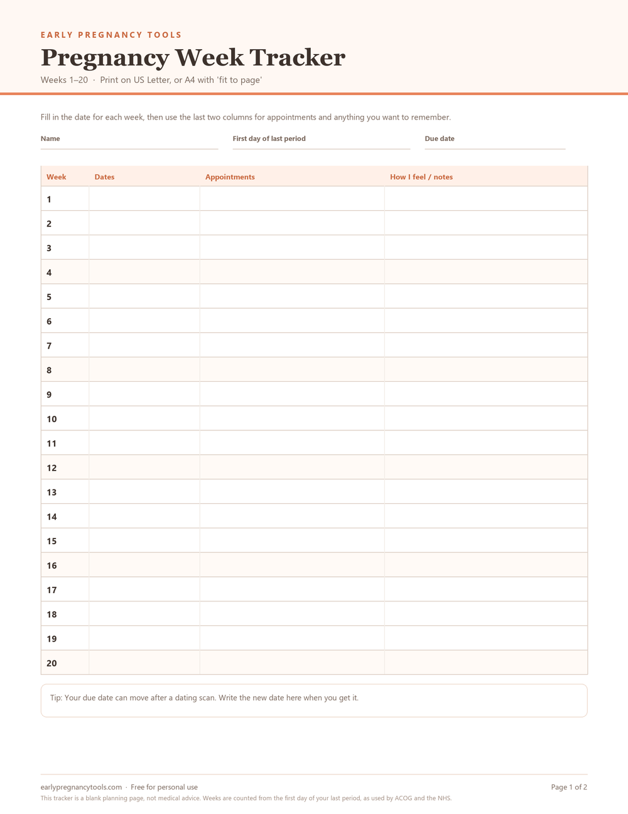
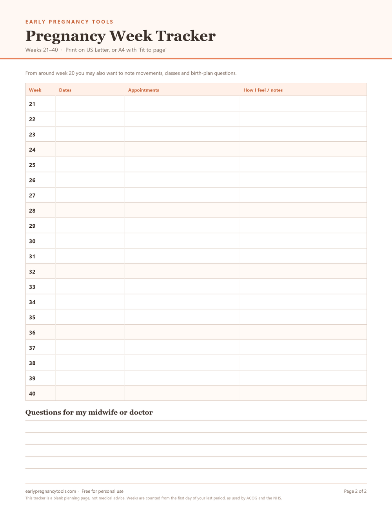

Free printable
Pregnancy Week Tracker Printable
All 40 weeks on two pages. Write the date each week starts, note your appointments, and keep everything you meant to ask your midwife in one place instead of across three notes apps.
PDF, 2 pages, 0.35 MB. No email needed, no account, no watermark over your notes. Works in black and white.
Prefer everything in one file? Get the 12-page printable planner kit — $6 → Launch price for the first 10 orders; instant download.
What you get
Two pages, one table per page, so the whole pregnancy fits without a booklet. Page one covers weeks 1–20; page two covers weeks 21–40 and adds a box for questions for your midwife or doctor.


Want the appointment checklist too?
The PDF above is free without this. If you leave an email address, I will send a two-page checklist of questions to ask at each visit — first, second and third trimester, the six weeks after birth, and what to ask before a glucose test, an ultrasound, NIPT or amniocentesis. Plus a short note if the tracker changes.
Optional. No ads and no daily emails. Your address is kept only to send the checklist and future tracker updates, and you can ask for it to be removed at any time by replying to any email. If the email has not arrived within a few minutes, check your spam folder or download the checklist directly.
PDF, 2 pages, 0.09 MB. No email needed if you use the direct link. Works in black and white, like the tracker.
Prefer a printable kit?
If you want the whole set in one purchase — an 8-visit appointment planner, 60 questions to ask, a 12-cycle trying-to-conceive tracker, home test and hCG logs, and a twelve-month milestone calendar — the 12-page planner kit is available as a paid download.
Get the 12-page planner kit — $6 →
Launch price for the first 10 orders. Instant download; print only the pages you need.
Designed to be used, not just downloaded
Four columns that matter
Week, dates, appointments, and how you feel. No weight, no symptom checklist, no diary prompts you will never fill in.
One row per week
Every week is numbered and evenly spaced, so a scan date, a midwife visit and a note can sit on the same line.
Home-printer friendly
Built for US Letter at 100%. On A4, choose fit to page. The lines and text stay readable in black and white.
How to fill it in
- Get your dating. Pregnancy weeks are counted from the first day of your last period. If you are not sure of that date, the due date calculator gives you your current week and your milestone dates.
- Write the date column. Add the calendar date each new week begins — the calculator lists them, or add seven days per row.
- Print it. Two pages, single-sided, black and white is fine. Keep it on the fridge, in your bag or in a folder with your appointment letters.
- Use the last column. Symptoms, questions, something the midwife said. This is the part you will actually reread later.
A note on what this is
This is a blank planning page, not medical advice. It contains no symptom guidance and no recommendations — it only gives you somewhere to write. Week numbers follow the standard 40-week dating used by ACOG and the NHS, counted from the first day of your last period.
Your due date may change after a dating scan. That is normal — write the new date on page one and keep going.
Questions
Is the pregnancy week tracker really free?
Yes. The PDF is free to download and print for your own use. You do not need an email address to download it, and there is no account and no payment step.
Can I print it on A4 paper?
The PDF is set up for US Letter, which is 8.5 by 11 inches. On A4 paper, choose Fit to page in your printer settings so nothing is cut off.
How do I know which week I am in?
Pregnancy weeks are counted from the first day of your last period, not from conception. Enter that date in the due date calculator to get your current week and the date each week starts.
Can I write on it on my phone or tablet?
Yes, if your device supports marking up PDFs. Save the file to your files app, open it in a PDF reader that allows annotation, and type or draw in the table cells. It is also designed to work well printed in black and white.